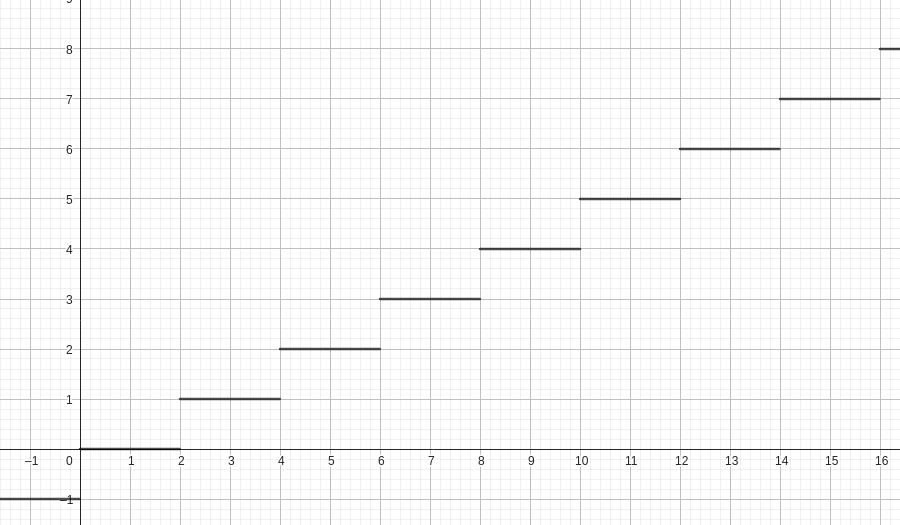
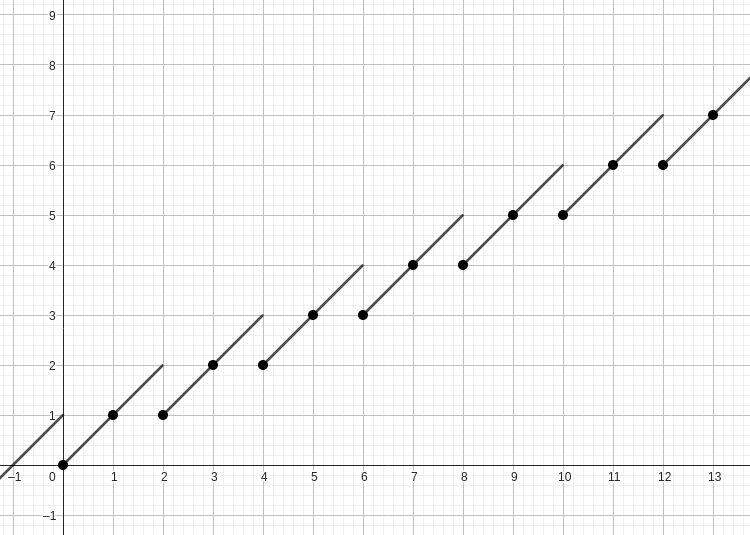

首先，容易想到在 时，我们只需要使用优先队列，每次取出最大的进行分割再放回去即可。
那么当 时，考虑怎么处理每次所有蚯蚓共同增加的长度 。我们不可能每次都取出所有元素再一个一个地进行处理。所以我们考虑维护一个偏移量，表示整个集合要共同增加的量，每次取出时先求出原值再操作，然后减去偏移量放回即可。
时间复杂度 。
本题中我们还有更加优秀的 的做法。
首先考虑 的情形。这里作出 时 和 的图像，会发现它们都是 单调不降 的。
 
要证：若 ，，则 且 。
前一个结论易证，而对于后一个结论，易知
注意到， 是整数，可得
证毕。
考虑维护三个队列 。
一开始将所有数按照 从大到小 的顺序加入队列 中。
每次从三个队列的队头中取最大的弹出，分割成 和 两段分别加入 和 的队尾。
易知每一步操作结束后三个队列的数都是 单调不增 的，得以保证下一次取出的必然是最大值。
再考虑 的情况。同样，我们还是维护一个偏移量，但是此时我们需要重新证明上面的结论。
要证：若 ，，则 且 。
对于前一个结论，有
对于后一个结论，根据 时的结论，有
证毕。
时间复杂度 。
// 2023.07.05
#include<bits/stdc++.h>
using namespace std;
queue<int> Q,Q1,Q2;
int n,m,q,u,v,t,a[100001];
void debug(int x){
int n=Q.size();
for(int i=1;i<=n;i++){
int v=Q.front();
printf("%lld ",v+1ll*x*q);
Q.pop();Q.push(v);
}
printf("\n");
n=Q1.size();
for(int i=1;i<=n;i++){
int v=Q1.front();
printf("%lld ",v+1ll*x*q);
Q1.pop();Q1.push(v);
}
printf("\n");
n=Q2.size();
for(int i=1;i<=n;i++){
int v=Q2.front();
printf("%lld ",v+1ll*x*q);
Q2.pop();Q2.push(v);
}
printf("\n");
}
int main(){
scanf("%d%d%d%d%d%d",&n,&m,&q,&u,&v,&t);
for(int i=1;i<=n;i++)
scanf("%d",a+i);
sort(a+1,a+1+n);
for(int i=n;i>=1;i--)
Q.push(a[i]);
for(int i=1;i<=m;i++){
int maxlen=-2e9,from;
if(!Q .empty()&&Q .front()>maxlen)maxlen=Q .front(),from=0;
if(!Q1.empty()&&Q1.front()>maxlen)maxlen=Q1.front(),from=1;
if(!Q2.empty()&&Q2.front()>maxlen)maxlen=Q2.front(),from=2;
if(from==0)Q .pop();
if(from==1)Q1.pop();
if(from==2)Q2.pop();
long long reallength=maxlen+(i-1ll)*q;
if(!(i%t))printf("%lld ",reallength);
Q1.push(int(reallength*u/v-(i-1ll)*q-q));
Q2.push(int(reallength-reallength*u/v-(i-1ll)*q-q));
}
printf("\n");
for(int i=1;i<=n+m;i++){
int maxlen=-2e9,from;
if(!Q .empty()&&Q .front()>maxlen)maxlen=Q .front(),from=0;
if(!Q1.empty()&&Q1.front()>maxlen)maxlen=Q1.front(),from=1;
if(!Q2.empty()&&Q2.front()>maxlen)maxlen=Q2.front(),from=2;
if(from==0)Q .pop();
if(from==1)Q1.pop();
if(from==2)Q2.pop();
long long reallength=maxlen+1ll*m*q;
if(!(i%t))printf("%lld ",reallength);
}
printf("\n");
return 0;
}